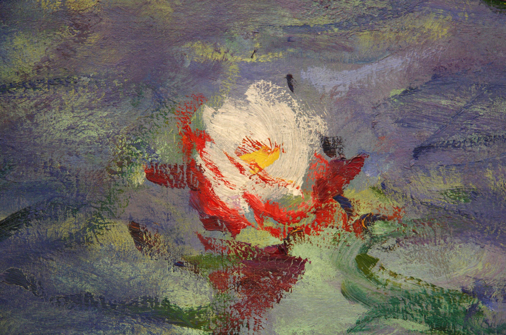

Музей Оранжери
Название музея говорит само за себя – он был простроен архитектором Фирмин Буржеуа в старой императорской оранжерее дворца Тюильри и впервые принял посетителей в 1927 году. Есть, правда, и другая версия – якобы свое имя музею подарили апельсиновые деревья, растущие вокруг здания. Оба варианта имеют право на существование, поскольку «оrangerie» по-французски означает и «оранжерея», и «теплица для апельсинов».
Музей Оранжери – настоящая мекка для ценителей творчества импрессионистов. Моне, Ренуар, Сезанн, Модильяни, Пикассо, Дерен, Утрилло, Руссо, Сутин, Гийом – эти известные всему миру имена украшают таблички возле великолепных полотен начала прошлого века, выставленных в музее.
В каких-то сантиметрах от себя можно увидеть знаменитый «Нотр-Дам» кисти Мориса Утрилло или его же «Улицу Мон-Сени», где оголенные ветви деревьев вплетаются в глухое серое небо, нависшее над безлюдной мостовой. И кажется – подойди чуть ближе, и сможешь ощутить на лице легкий ветерок и вдохнуть запах старого Парижа.
А портрет Коко Шанель работы Мари Лорансен – полуобнаженная Grande Mademoiselle, едва прикрытая драпировками, чья поза и задумчивый, почти тоскливый взгляд выдают в этой выдающейся личности обычную - и не слишком счастливую - женщину…
Или небольшие по размерам пейзажи Поля Сезанна – «В парке Шато Нуар» и «Пейзаж с красной крышей» - чьи сочные, смелые и яркие краски как будто добавляют цвета и света окружающему миру.
Но главная гордость музея – это овальный зал, отданный великому Клоду Моне и его «Кувшинкам» («Les Nympheas»). Это восемь огромных панно, которые Моне написал в последние десять лет своей жизни, уже почти потеряв зрение, и, передавая их в дар Франции, завещал никогда не разделять их.
Последняя воля основателя импрессионизма было выполнено – все объединены в одну экспозицию и демонстрируются в специально отведенном для них зале с закругленными стенами. Ровный свет, нисходящий с потолка и бледная серовато-лиловая гамма помещения – лучший фон, который только мог пожелать Моне для своих пронизанных светом и окутанных тишиной «Кувшинок».

К этим цветам, чье французское название происходит от нимф – античных духов природы, представлявшихся людям в образе прекрасных девушек, - художник испытывал особые чувства, и писал их всю свою жизнь. Крупноформатные панно, выставленные в музее Оранжери, - это пруд с кувшинками, японский мостик и ивы, растущие на берегу в саду художника в Живерни.
Здесь можно провести часы, разглядывая смелые, сочные мазки кисти художника. Не случайно куратор музея Филипп Сонье называет это зал «Сикстинской капеллой импрессионизма».